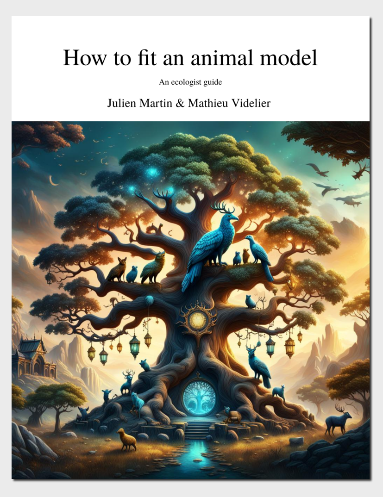

Comment ajuster un modèle animal?
Un guide pour les écologiste
Tutoriel sur l’ajustement d’un modèle animal à l’aide de plusieurs packages R. Tutoriels mis à jour et étendus à partir de An ecologist guide to animal model Wilson et al. (2010).
Preface

Ce livre est une collection de tutoriels tirés de l’excellent article de Wilson et al. (2010). Les tutoriels ont été mis à jour pour fonctionner avec les dernières versions des logiciels, complétés par des informations supplémentaires et d’autres logiciels ont été ajoutés. Eric Postma a aimablement fourni une version mise à jour du tutoriel original d’asreml-r de asreml-r v3 à asreml-r v4.
Il s’agit d’un document évolutif et les informations sont régulièrement mises à jour/ajoutées
Citer le livre
Julien Martin & Mathieu Videlier (2024). Comment ajuster un modèle animal ? Un guide pour les écologistes évolutionnistes utilisant plusieurs packages R. Version : 1.0.0 (2024-10-08). https://doi.org/10.5281/zenodo.10891227
Licence
Nous fournissons ce livre sous la licence Creative Commons Attribution-NonCommercial-ShareAlike 4.0 International. 
N’hésitez pas à utiliser tout ou partie du contenu de ce livre. La seule chose que nous vous demandons est de citer la source originale et les auteurs conformément à la licence et d’utiliser la même licence si vous partagez ce travail publiquement. Si vous trouvez ce livre utile ou si vous avez des commentaires ou des suggestions, nous serions ravis de les recevoir (contact info).
Images
L’image de couverture a été générée par Julien Martin à l’aide du générateur d’images Nightcafe AI en utilisant l’appel “Family tree of legendary beast”.
Wui sommes-nous ?

Julien Martin est professeur à l’Université d’Ottawa et travaille sur l’écologie évolutive. Il a découvert R avec la version 1.8.1 et enseigne R depuis la version 2.4.0. Il a développé la première version du livre en février 2021 et continue maintenant à développer le livre et à maintenir le site pour toutes les langues (actuellement seulement l’anglais mais le français et l’espagnol seront bientôt disponibles).
Mathieu Videlier est actuellement chercheur postdoctoral et collabore avec le Pr. Jacqueline Sztepanacz à l’Université de Toronto. Il a rejoint le projet en mai 2021. Il a ajouté et continue d’ajouter des détails au document. Il s’occupe également de la traduction en français et en espagnol.
- : personal page
- : BioBipbip
- : MathieuVID
Collant Hex